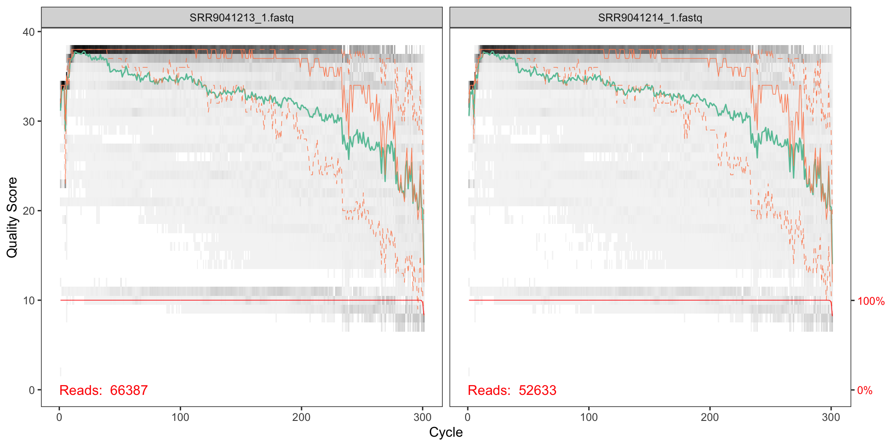
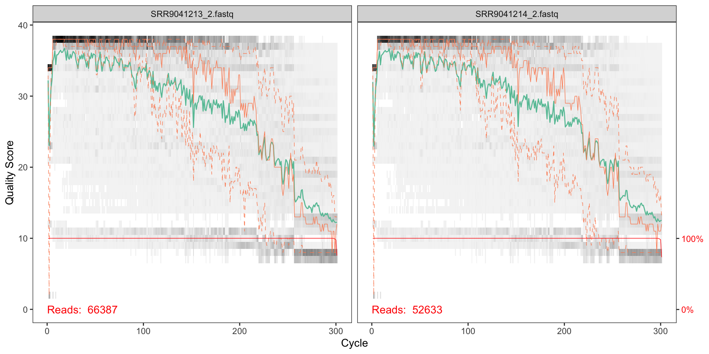
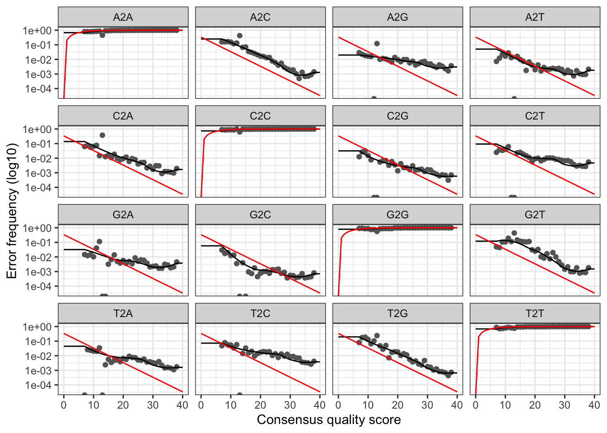
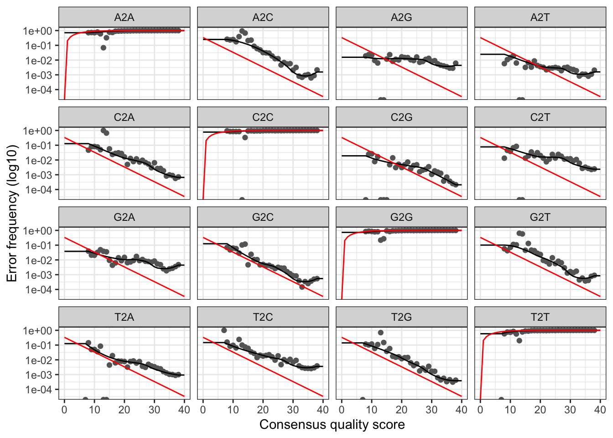

Illumina MiSeq fastq files were downloaded from the NCBI Sequence Read Archive (SRA). The The SRA stores raw sequencing data and alignment information from high-throughput sequencing platforms. For this particular study, demultiplexed reads from from a MiSeq DNA sequencing run were generated from a scientific study of seston DNA (environmental DNA or “eDNA” represented in suspended particulate matter) sampled from an urban watershed of size 42,9994ha in southwestern Ohio, USA. 1
# Load libraries
library(dada2)## Loading required package: RcpppackageVersion("dada2")## [1] '1.14.0'path <- "data_analysis_files/fasta/MiSeq"
list.files(path)## [1] "back-up" "filtered" "SRR9041213_1.fastq"
## [4] "SRR9041213_2.fastq" "SRR9041214_1.fastq" "SRR9041214_2.fastq"Now we read in the names of the fastq files, and perform some string manipulation to get matched lists of the forward and reverse fastq files.
# Forward and reverse fastq filenames have format: SAMPLENAME_R1_001.fastq and SAMPLENAME_R2_001.fastq
fnFs <- sort(list.files(path, pattern="1.fastq", full.names = TRUE))
fnRs <- sort(list.files(path, pattern="2.fastq", full.names = TRUE))
# Extract sample names, assuming filenames have format: SAMPLENAME_XXX.fastq
sample.names <- sapply(strsplit(basename(fnFs), "_"), `[`, 1)Visualise the quality profiles of the forward reads for the first two fastq files:
plotQualityProfile(fnFs[1:2])
How should we interpret the charts?
The x axis shows each base position - there are 300 nucleotides in the chart above.
the quality seems to be ok to around 225, so we will trim the last 75 nucleotides from the forward reads.
We can also visualise the quality of the first two reverse reads:
plotQualityProfile(fnRs[1:2])
The reverse reads do not look as good qualoty as the forward reads; there is a significant reduction of quality starting around halfway along the read (around nucleotide 150), so we will trim here.
Assign filenames for filtered fastq.qz files.
# Place filtered files in filtered/ subdirectory
filtFs <- file.path(path, "filtered", paste0(sample.names, "_F_filt.fastq.gz"))
filtRs <- file.path(path, "filtered", paste0(sample.names, "_R_filt.fastq.gz"))
names(filtFs) <- sample.names
names(filtRs) <- sample.namesNow we can parameterise the filtering and trimming of the fastq files (both forward and reverse), and then store the results in a compressed format. A standard set of filtering parameters will be used together the trim lengths we determined from the quality plots.
out <- filterAndTrim(
# File path of forward reads that are to be filtered
fnFs,
# File path to store the filtered and trimmed results in a compressed format
filtFs,
# File path of reverse reads that are to be filtered
fnRs,
# File path to store the filtered and trimmed results in a compressed format
filtRs,
# Forward and reverse truncation lengths respectively
truncLen=c(250,180),
# After truncation, sequences with more than maxN Ns will be discarded
maxN=0,
# After truncation, reads with higher than maxEE "expected errors" will be discarded
maxEE=c(2,2),
# Truncate reads at the first instance of a quality score less than or equal to 2
truncQ=2,
# Discard reads that match against the phiX genome
rm.phix=TRUE,
# Gzip output files
compress=TRUE,
# Process using multiple threads
multithread=TRUE)What are the percentage change in the number of reads after the trim and filter operation?
library(dplyr)
out %>% as.data.frame() %>%
mutate(p_chg = (.$reads.out - .$reads.in) / .$reads.in)## reads.in reads.out p_chg
## 1 66387 30450 -0.5413259
## 2 52633 24607 -0.5324796Every amplicon dataset has a different set of error rates. The DADA2 algorithm uses a parametric error model to learn the error rates.
# Learn forward error rates
errF <- learnErrors(filtFs, multithread=TRUE)## 13764250 total bases in 55057 reads from 2 samples will be used for learning the error rates.# Learn reverse error rates
errR <- learnErrors(filtRs, multithread=TRUE)## 9910260 total bases in 55057 reads from 2 samples will be used for learning the error rates.We can visualise the error rates as follows:
# Visualise the forward error rates
plotErrors(errF, nominalQ=TRUE)## Warning: Transformation introduced infinite values in continuous y-axis
## Warning: Transformation introduced infinite values in continuous y-axis
# Visualise the reverse error rates
plotErrors(errR, nominalQ=TRUE)## Warning: Transformation introduced infinite values in continuous y-axis
## Warning: Transformation introduced infinite values in continuous y-axis
The plots show the error rate for each possible transition. The black line shows the estimated error rates after convergence of the machine-learning algorithm. The red line shows the error rates expected under the nominal definition of the Q-score. In generate, the error rates appear to drop with increased quality.
We can now apply the core DADA2 inference algorithm (inc. ref), to the filtered and trimmed data.
# Apply sample inference to forward data
dadaFs <- dada(filtFs, err=errF, multithread=4)## Sample 1 - 30450 reads in 14499 unique sequences.
## Sample 2 - 24607 reads in 12657 unique sequences.# Apply sample inference to reverse data
dadaRs <- dada(filtRs, err=errR, multithread=4)## Sample 1 - 30450 reads in 12275 unique sequences.
## Sample 2 - 24607 reads in 11126 unique sequences.The core DADA2 algorithm corrects Illumina-sequenced amplicon errors, and can resolve variants by as little as one nucleotide2. The dada class object has a number of results that can be inspected:
# Summary of a particular sample
dadaFs$SRR9041213## dada-class: object describing DADA2 denoising results
## 353 sequence variants were inferred from 14499 input unique sequences.
## Key parameters: OMEGA_A = 1e-40, OMEGA_C = 1e-40, BAND_SIZE = 16We can now merge the forward and reverse reads together to obtain the full denoised sequences. Merging is performed by aligning the denoised forward reads with the reverse-complement of the corresponding denoised reverse reads, and then constructing the merged “contig” sequences. By default, merged sequences are only output if the forward and reverse reads overlap by at least 12 bases, and are identical to each other in the overlap region.
Paired reads that did not exactly overlap are removed by mergePairs, further reducing spurious output.
# Merge pairs
mergers <- mergePairs(dadaFs, filtFs, dadaRs, filtRs, verbose=TRUE)## 26342 paired-reads (in 315 unique pairings) successfully merged out of 29450 (in 1222 pairings) input.## 21181 paired-reads (in 263 unique pairings) successfully merged out of 23818 (in 1036 pairings) input.# Inspect the merger data.frame from the first sample
head(mergers[[1]])## sequence
## 1 GCTTGTCTCAAAGATTAAGCCATGCATGTCTAAGTATAAACTGCTTATACTGTGAAACTGCGAATGGCTCATTAAATCAGTTATAGTTTATTTGATGGTACCTACTACACGGATAACCGTAGTAATTCTAGAGCTAATACGTGCGTAAATCCCGACTCCTGGAAGGGACGTATTTATTAGATTTAAGGCCAACCGAGCTTGCTCGTCTCATGGTGAATCATGATAACTTTACGAATCGCATGGCCTTGCGCCGGCGATGTTTCATTCAAATTTCTGCCCTATCAATTGGCGATGGTAGGATAGAGGCCTACCATGGTGGTAACGGGTGACGGGGAATTAGGGTTCGATTCCGGAGAGGGAGCCTGAGAAACGGCTACCACATCCAAGGAAGGCAGCAGGC
## 2 GCTTGTCTCAAAGATTAAGCCATGCATGTCTAAGTATAACCATTATACAGGAAAACTGCGAACGGCTCATTATATCAGTTATTGTTTCTTTGATAGTCCCTTACTACTTGGATACCTGTAGTAATTCTAGAGCTAATACATGCATCAATACCCGACTTCTGGAAGGGTAGTATTTATTAGGTTTAAACCAACACCCCTCGGGGTTGCTTTGGTGATTCATAATAACTTATCGGATCGCATGGCTCCACGCCGGCGATGGATCATTCAAGTTTCTGCCCTATCAGTTTTGGTTGGGAGTGTATTGGACTCCCAAGACTTTGACGGGTAACGAATTGTTAGGGCAAGATTTCGGAGAGGGAGCCTGAGAGACGGCTACCACATCCAAGGAAGGCAGCAGGC
## 3 GCTTGTCTCAAAGATTAAGCCATGCATGTCTAAGTATAACCATTATACAGGAAAACTGCGAACGGCTCATTATATCAGTTATTGTTTCTTTGATAGTCCCTTACTACTTGGATACCTGTAGTAATTCTAGAGCTAATACATGCATCAATACCCGACTGTTCGCGGAAGGGTAGTATTTATTAGGTATAGACCAACCGTCTTCGGACGTGCTTTGGTGATTCATAATAACTTATCGGATCGCATGGCTCCATGCCGGCGATGGATCATTCAAGTTTCTGCCCTATCAGCTTTGGATGGTAGTGTATTGGACTACCATGGCTTTAACGGGTAACGAATTGTTAGGGCAAGATTTCGGAGAGGGAGCCTGAGAGACGGCTACCACATCCAAGGAAGGCAGCAGGC
## 4 GCTTGTCTCAAAGATTAAGCCATGCATGTCTAAGTATAACCATTATACAGGAAAACTGCGAACGGCTCATTATATCAGTTATTGTTTCTTTGATAGTCCCTTACTACTTGGATACCTGTAGTAATTCTAGAGCTAATACATGCATCAATACCCGACTTCTGGAAGGGTAGTATTTATTAGGTATAGACCAACACCCTTCGGGGTTGCTTTGGTGATTCATAATAACTAATCGGATCGCATGGCTCCATGCCGGCGATGGATCATTCAAGTTTCTGCCCTATCAGTTTTGGTTGGGAGTGTATTGGACTCCCAAGACTTTGACGGGTAACGAATTGTTAGGGCAAGATTTCGGAGAGGGAGCCTGAGAGACGGCTACCACATCCAAGGAAGGCAGCAGGC
## 5 GCTTGTCTCAAAGATTAAGCCATGCATGTCTAAGTATAACCATTATACAGGAAAACTGCGAACGGCTCATTATATCAGTTATTGTTTCTTTGATAGTCCCTTACTACTTGGATACCTGTAGTAATTCTAGAGCTAATACATGCATCAATACCCGACTTCTGGAAGGGTAGTATTTATTAGGTTTAAACCAACACCCCTCGGGGTTGCTTTGGTGATTCATAATAACTTATCGGATCGCATGGCTCCATGCCGGCGATGGATCATTCAAGTTTCTGCCCTATCAGTTTTGGTTGGGAGTGTATTGGACTCCCAAGACTTTGACGGGTAACGAATTGTTAGGGCAAGATTTCGGAGAGGGAGCCTGAGAGACGGCTACCACATCCAAGGAAGGCAGCAGGC
## 6 GCTTGTCTCAAAGATTAAGCCATGCACGTCTAAGTATAAGCATTATACTGTGAAACTGCGAATGGCTCATTATATCAGTTATAGTTTATTTGATGGTCCTTGCTACTTGGATAACCGTAGTAATTCTAGAGCTAATACATGCACAAATCCCCGACTGCTTGGAAGGGGTGTATTTATTAGATGGAAACCAATTCGGGGGAAACCTCGGTTCATGGTGATTCATAATAACTTTCGGATCGGCCTTTCGGTCGATGCATCATTCAAGTTTCTGCCCTATCAGTTGTGGATGGTAGGGTATTGGCCTACCATGACTTTAACGGGTAACGGAGAATTAGGGTTCGATTCCGGAGAGGGAGCCTGAGAAATGGCTACCACATCCAAGGAAGGCAGCAGGC
## abundance forward reverse nmatch nmismatch nindel prefer accept
## 1 3126 1 1 30 0 0 2 TRUE
## 2 2173 2 3 31 0 0 2 TRUE
## 3 1427 3 4 28 0 0 2 TRUE
## 4 1195 5 2 31 0 0 2 TRUE
## 5 1165 4 5 31 0 0 2 TRUE
## 6 857 6 7 35 0 0 2 TRUEHow to interpret this?
We can now construct an amplicon sequence variant table (ASV) table, a higher-resolution version of the OTU table produced by traditional methods. The sequence table is a matrix with rows corresponding to (and named by) the samples, and columns corresponding to (and named by) the sequence variants.
# Generate sequence table
seqtab <- makeSequenceTable(mergers)
# Sequence table dimensions
dim(seqtab)## [1] 2 443# Inspect distribution of sequence lengths
table(nchar(getSequences(seqtab)))##
## 331 349 358 359 360 361 363 369 370 372 373 374 376 377 380 382 383 384
## 1 1 1 4 5 2 1 1 1 1 2 2 1 1 2 4 10 2
## 385 386 387 388 389 390 391 392 393 394 395 396 397 398 399 400 401 402
## 3 2 1 7 13 10 8 6 11 25 10 9 5 10 68 23 27 68
## 403 404 405 406 407 408 409 410 411 412 413 414 415 417
## 20 21 13 3 4 4 7 4 6 2 4 1 3 3The table contains 65 ASVs
What is a chimera?!
seqtab.nochim <- removeBimeraDenovo(seqtab, method="consensus", multithread=TRUE, verbose=TRUE)## Identified 117 bimeras out of 443 input sequences.dim(seqtab.nochim)## [1] 2 326# What % of the merged reads?
sum(seqtab.nochim)/sum(seqtab)## [1] 0.9369989We can track the number of reads that made it through each step in the pipeline:
getN <- function(x) sum(getUniques(x))
track <- cbind(out, sapply(dadaFs, getN), sapply(dadaRs, getN), sapply(mergers, getN), rowSums(seqtab.nochim))
# If processing a single sample, remove the sapply calls: e.g. replace sapply(dadaFs, getN) with getN(dadaFs)
colnames(track) <- c("input", "filtered", "denoisedF", "denoisedR", "merged", "nonchim")
rownames(track) <- sample.names
track## input filtered denoisedF denoisedR merged nonchim
## SRR9041213 66387 30450 29715 30113 26342 24522
## SRR9041214 52633 24607 24030 24319 21181 20007Doesn’t look to hot! Maybe we truncated too much towards the start?
This section is not executed as it returns no result after 1 hour!
Awaiting greater horsepower…
taxa <- assignTaxonomy(
# Sequences to be assigned
seqtab.nochim,
# Reference fasta database - 18S ribosomal DNA
"data_analysis_files/fasta/silva/silva_132.18s.99_rep_set.dada2.fa.gz",
# Make multithreaded
multithread=4,
# Print status
verbose = TRUE
)High-throughput environmental DNA analysis informs a biological assessment of an urban stream↩
Callahan BJ, McMurdie PJ, Rosen MJ, Han AW, Johnson AJA, Holmes SP (2016). “DADA2: High-resolution sample inference from Illumina amplicon data.” Nature Methods, 13, 581-583. doi: 10.1038/nmeth.3869 (URL: https://doi.org/10.1038/nmeth.3869).↩